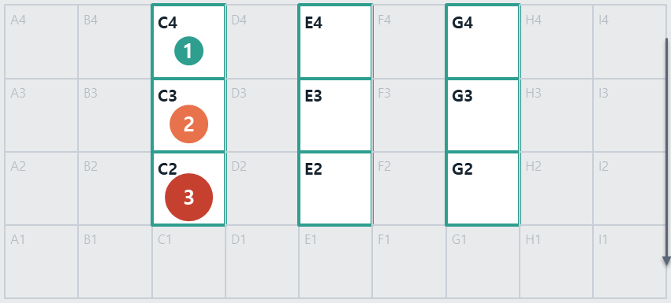
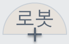
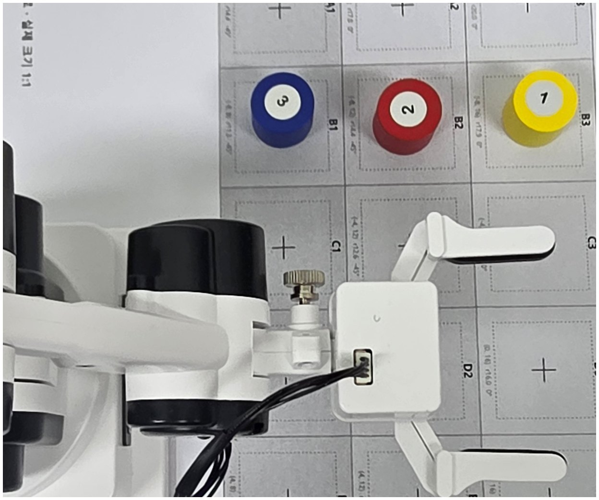
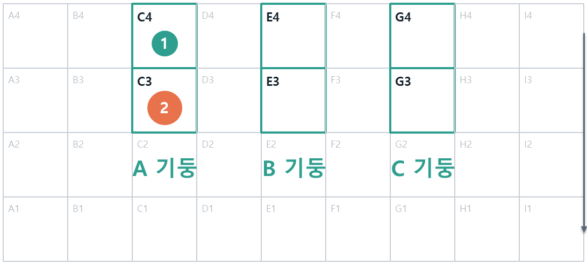
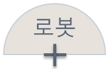
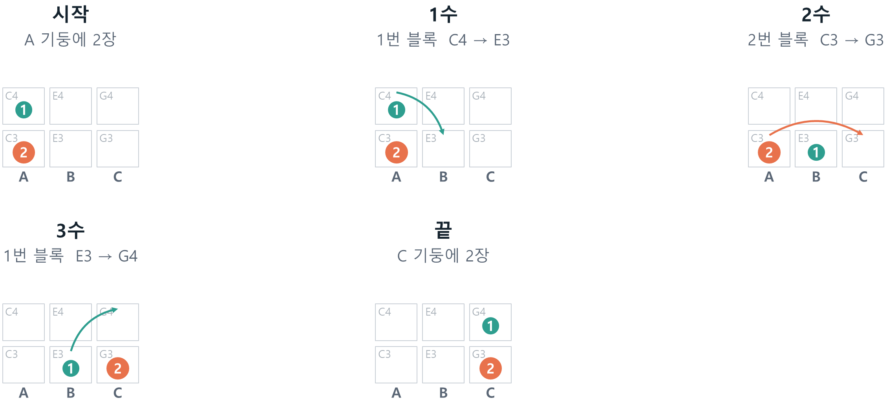
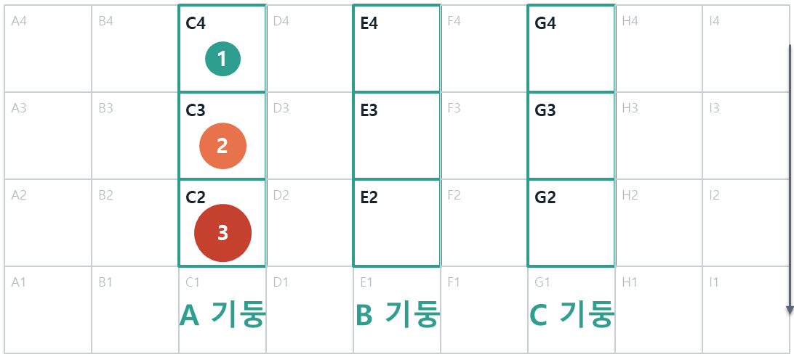
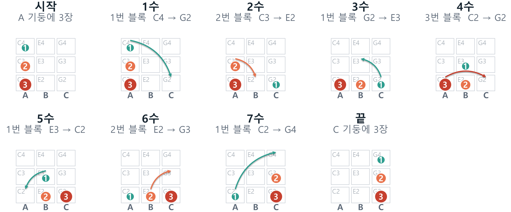

주제 8 · 21차시
하노이 탑
재귀로 만든 이동 목록을 팔이 옮긴다
실제 구분 차시보다 많은 시간이 소요될 수 있음.
하노이 탑, 일곱 수로 옮겨보기 [심화 미션] 하노이 탑 · A3 작업 지도
하노이 탑 — 크기가 다른 판을 쌓은 탑을, 자리 세 곳(출발 · 경유 · 도착)만 써서 통째로 옮기는 퍼즐이다.
규칙은 둘 — 한 번에 한 장만 옮긴다 · 작은 판 위에 큰 판을 올릴 수 없다. 번호가 판의 크기다.
탑은 로봇에서 멀어지는 쪽으로 눕혀 한 열에 늘어놓는다 — 가까운 칸이 바닥.
출발
경유
도착

출발
경유
도착
C2 · C3 · C4
E2 · E3 · E4
G2 · G3 · G4
로봇에 가까워짐

로봇에 가까운 칸이 탑의 바닥, 멀어질수록 위층이다.
작은 블록보다 먼 칸에 큰 블록을 둘 수 없다.
하노이 탑, 일곱 수로 옮겨보기 [심화 미션] 하노이 탑

준비물 — 같은 크기 3cm 블록 3개 + 번호 스티커 1·2·3 (번호가 ‘판의 크기’ 역할)
· 큰 번호가 로봇에 가장 가까운 칸이 되게
[A3 작업 지도 기준] C2·C3·C4에
[B4 작업 지도 기준] B1·B2·B3에
한 열로 놓고 시작
※ 교구나 블록이 없는 경우 가상 모드 활용
직접 만들어 보기 — 세 걸음 하노이 탑 · 작성&실행 05_하노이탑_실습.py
이 파일 하나로 돌아간다 · 실제 로봇은 _실기기 파일과 같은 폴더에
로봇은 목록을 수행할 뿐이고, 목록을 만드는 일은 사람이 해야 한다.
1단계 · 두장()
<핵심코드> - 블록 2개를 옮기기 위한 순서
가장 작은 블록을 경유지로 잠시 두고 -> 큰 판을 목적지로 옮긴다 -> 경유지에 둔 가장 작은 블록을 목적지로 옮긴다.
2단계 · 세장() [빈칸]
맨 아래 큰 판을 옮기려면 위의 2장이 먼저 비켜 줘야 한다.
비켜 둘 블록을 경유에 두고 moves.append로 옮겨야 할 블록 중 가장 큰 블록을 목적지로 이동한다.
3단계 · hanoi() [빈칸]
두장() 과 세장() 을 나란히 놓으면 동작 루틴이 같고 옮겨야 할 블록의 숫자만 다르다.
둘을 한 함수로 합치면 부를 이름이 자기 자신이 된다. 이러한 문제 해결 방식을 “재귀 호출”이라고 부른다.
extras/05_하노이탑_기본.py 로 먼저 7수를 눈으로 보고, 05_하노이탑_실습.py 를 연다
2단계만 끝내도 로봇은 움직인다
하노이 탑, 일곱 수로 옮겨보기 [심화 미션] 하노이 탑 · 05_하노이탑.py
def hanoi(n, src, dst, via):
if n == 0: return
hanoi(n-1, src, via, dst) # ① n-1 장을 비켜 둔다
옮긴다(src, dst) # ② 가장 큰 판
hanoi(n-1, via, dst, src) # ③ 그 위로extras/05_하노이탑.py 를 실행하면 이 함수가 만든 이동 목록을 팔이 수행한다 — 블록 3장이면 딱 7회 이동 수행
로봇은 탑을 보지 못한다 — 자리는 코드가 센다.
그래서 그림과 똑같이 놓는 것이 중요하고, 도중에 손대지 않는다.
함수가 자기 자신을 부르는 것(재귀)을 코드로 읽지 말고, 팔의 움직임으로 먼저 보자.
[해보기]
1. 파일 맨 위의 블록수 를 올리며 (가상으로 — 실제 로봇은 3장까지) 걸린 시간을 적는다 — 3장 7번, 4장 15번, 5장 31번…
2. 10장이면 몇 번일까? (계산: 2¹⁰ − 1 = 1023번 — 오늘 수업 안에 끝날까?)
3. [레벨 2] ①과 ③ 줄의 순서를 바꾸면? 예상부터 적고 실행.
블록 2장 옮겨보기 — A3 작업 지도 기준 하노이 탑

로봇에 가까워짐
탑을 쌓지 않는다. 로봇에서 멀어지는 쪽으로
눕혀서 한 줄에 늘어놓는다.
블록을 이렇게 놓는다
●
2번 크기 블록 → C3 칸
●
1번 크기 블록 → C4 칸
1번이 가장 작고 2번이 가장 큽니다.
[핵심 규칙] 작은 블록보다 먼 칸에 큰 블록을 둘 수 없다.

탑을 쌓지 않고 눕힌다. 05_하노이탑_기본_가상.py 의 블록수 를 2 로, 이동목록을 3수로 적는다 · 실제 로봇은 _실기기 파일로
블록 2장 — 로봇이 지나갈 순서 하노이 탑
옮기는 횟수 3회 (= 2^2 - 1). 아래 칸 = 로봇에 가까운 칸.

블록 3장 옮겨보기 — A3 작업 지도 기준 하노이 탑

탑을 쌓지 않는다. 로봇에서 멀어지는 쪽으로
눕혀서 한 줄에 늘어놓는다.
블록을 이렇게 놓는다
●
3번 크기 블록 → C2 칸
●
2번 크기 블록 → C3 칸
●
1번 크기 블록 → C4 칸
1번이 가장 작고 3번이 가장 큽니다.

로봇에 가까워짐
[핵심 규칙] 작은 블록보다 먼 칸에 큰 블록을 둘 수 없다.
블록이 한 장 늘면 칸도 한 칸 더 쓴다.
블록 3장 — 로봇이 지나갈 순서 하노이 탑
옮기는 횟수 7회 (= 2^3 - 1). 아래 칸 = 로봇에 가까운 칸.

옮기는 횟수 7회 = 2³ − 1. 한 장 늘었는데 횟수는 두 배가 넘게 증가한다.